Specifications
- Path
- Descriptions > 55 ELECTRICAL EQUIPMENT > 5505 INSTRUMENT/GAUGE ELECTRICAL CIRCUITS > Specifications
- Kind
- system description
- Applies to
- all engines; all production periods
- Interactive page
- https://sloeber94.github.io/elrnDB-lThss/en/#/74250
Applies to: all engines; all production periods
F.L.ORE.N.C.E. ELECTRICAL AND ELECTRONIC SYSTEM
In conventional electrical systems, functions are activated with the aid of dedicated point-to-point lines
The increase in the number of electrical/electronic devices on board new cars has given rise to heavier and more complex connections. This is partly due to the complexity of the functions implemented in the burgeoning number of electronic units - which also need to exchange data continually: all this makes new electrical systems more difficult to install and increases the complexity of fault diagnosis.
Many problems have been overcome and new electrical systems have been optimised compared to conventional systems by using a network form of connection. This provides a more effective means of managing communication on the board the car and of transferring data between the various subsystems. Information is distributed via serial pathways (buses) that may take the form of: individual wires, twisted wire pairs or even optical fibres.
Conventional solution
The three control units (electronic nodes) require a number (N) of wires for each input/output data item in order to perform their function. This multiplied the amount of cable required to the point that systems are made more complex (design and manufacture) and more voluminous (weight, bulk, cost). Some 40 kg of wiring looms are required that stretch for more than 2 km - and this figure could double every 10 years because even now a car could be equipped wiht 20 to 40 electronic control units (ECUs).
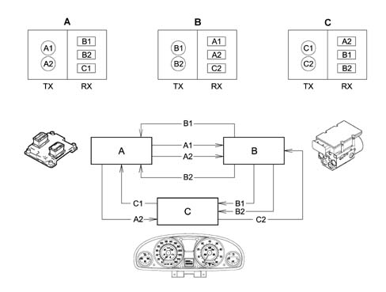
- Tx - information to be transmitted from nodes A (A1,A2) B (B1, B2) C (C1, C2)
- Rx - information to be received from nodes A (B1, B2, C1) B (A1, A2, C2) C (A2, B1, B2)
The first step towards reducing the volume and complexity of wiring looms was to group several electronic functions in a single unit: fewer control units = fewer wires.
Examples of integation
Engine control unit (NCM) manages: injection, ignition, pollution system, engine cooling control etc.
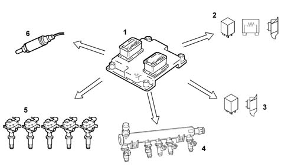
- 1 - Engine management control unit
- 2 - Engine cooling fan, 1st speed
- 3 - Engine cooling fan, 2nd speed
- 4 - Injectors (injection)
- 5 - Coils (ignition)
- 6 - Lambda sensor
Integration of electrical/electronic functions in a single electronic control unit (ECU) has allowed us to improve:
- current uptake management (lowe battery wear);
- operation of appliances, because they are managed by a single control unit;
- troubleshootng due to self-diagnosti functions in the control units.
This first stage allowed us to reduce the number of electronic units but not to reduce the volume of wiring to a sufficient extent.
Multiplexing solution
This involves exchanging various data signals between various ECUs on a single transmission channel (a principle already used for phone, radio and TV networks): 1 BUS (2 wires) for all data.
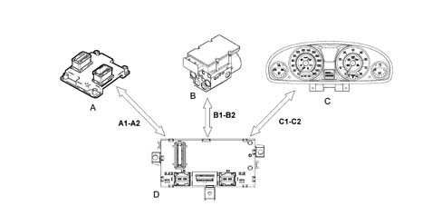
- A-B-C - Nodes (ECU)
- A1-A2-B1-B2-C1-C2 - Communication bus
- D - Body Computer master ECU
The second stage allowed us to make a decise leap in terms of:
- Reducing and simplifying the wiring
- Reducing the number of sensors (information sharing)
- Allowing ECUs to communicate among themselves.
As more and more systems require interconnection, the MULTIPLEXING solution becomes more and more attractive.
In general terms, in order to transmit data via a multiplexing system we need to define the following with precision:
- transmission channel (wires, optical fibres, radio waves etc.);
- type of signal sent via the channel (voltage, current, light etc.);
- the communication protocol (all the rules that allow management of analogue or digital transmission type, code type, address, transmission order, error detection etc.).
The transmission support or channel on the car is a pair of wires known as a BUS. The system therefore transmits batches (packages of information sent one after another. This is not done in any particular set order but in accordance with the needs of the control unit). The signals are voltage signals and the protocol used is CAN (Controller Area Network), a system that was developed and introduced by Robert Bosch in 1983.
F.L.ORE.N.C.E. ARCHITECTURE
The "F.L.ORE.N.C.E." (Fiat Luxury-car OrientEd Networks and Control Electronics) was designed for optimal management of electrical and electronic functions on top-of-the-range car models.
The system interacts with all electrical system functions to directly control body functions (visibility, access, on-board information, comfort, communications etc.) and supports information exchange between traction control systems (engine, braking, gearbox etc.).
To optimise the system, each control unit (electronic or electromechanical) is located in a central position in relation to the functions it manages. This allows the power and signal distribution system to be minimised. This is also made possible through extensive use of serial communication networks that allow us to overcome problems of space-saving, reliability, weight and cost.
Power is distributed via the junction units and/or fuse boxes. These are connected to control elements (relays and static actuators) to ensure maximum electrical protection and minimum complexity.
The wiring architecture is reduced because each system function requires fewer dedicated wires. This is because the wires (ABS, airbag, sidebag) are integral with the front, facia and rear wiring loom to simplify installation operations.
Systems of this type offer innumerable benenfits, for example:
- sensors included in the various subsystems are available to the network;
- information may be shared;
- sensor duplication is eliminated;
- system flexibility is increased;
- new functions may be added simply by changing the software (developments throughout the car’s lifetime);
- wiring design is simplified and the number of connectors reduced;
- the operational safety of electronic devices is increased to improve the reliability of information transmitted;
- because a diagnostic function is built-in, service operations on electric/electronic components are easier.
The architecture developed is compatible with various user interface solutions (control arrangement, information allocation and display method).
The "F.L.ORE.N.C.E." system used on this car is based on the Lancia K system, but eliminates (E) or adds (integrates) (I) the following components:
- Turn signal/hazard warning flasher (I)
- Headlamp washer timer (I)
- Immobilizer control unit (I)
- IGE control unit (I)
- Infocenter control unit (I)
- Central locking control unit (I)
- Front electric window control unit (I)
- Window control buttons on driver/passenger door (I)
- Rear electric window control unit (I)
- Headlamp alignmnet corrector/fog lamp/rear fog lamp control (I)
- Instrumer light dimmer (I)
- Infocenter control unit (I)
- Remote control receiver (I)
- Volume-sensing sensors for alarm (I)
- Junction node (E)
- Engine bay relay and fuse unit (I)
- Engine compartment junction unit (I)
- Passenger compartment junction unit (I)
- Coolant temperature sensor on engine for instrument functions (E)
- Speedometer generator (E)
- Central front courtesy light (I)
- Courtesy light timer (I)
- Electric rear view mirror control (I)
Network architecture
The structure consists of three CAN communication networks which connect nodes belonging to the three different areas (vehicle dynamic control and bodywork functions) and a certain number of complementary serial lines used for diagnosis and other specific functions:
- C-CAN for dynamic vehicle control (high speed)
- B-CAN network for the management of standard body functions (low speed)
- I-CAN network for carrying data and commands relating to on-board information (low speed)
- serial line w for immobiliser recovery
- diagostic line k for Engine Control Node/Automatic Transmission Node
- k diagnostic line for the Air Bag control unit;
- diagnostic line k for NFR
- diagnosic line k for facia area (CSG, CAF)
- diagnostic line k for rear area (NPB, SCS, CPP)
- diagnostic line k for front area (NAC, NBA, CRS)
- A-BUS serial line for managing wipers, safety, exterior lighting. This connects NBC, NIM, CSA, CSP, CTC, CPP, NEC
- NIT/NCL serial line for showing data on display
- NBC/ CFS two-way serial line for testing tail-lights
- CFD/ CFS two-way serial line for testing right tail-light
The C-CAN and B-CAN networks are connected to one another by a gateway for transferring joint information. This is located in the Body Computer Node.
The fault diagnosis of the nodes connected to the B-CAN network is carried out via the CAN network, whilst for those connected to the C-CAN this is carried out by means of the specific K lines. Both flow into the EOBD connector on the Body Computer.
The system also includes a set of special wires:
- audio bus for CD Changer
- audio/video bus for TV tuner
- audio video bus for VHS videocassette player
- aerial leads for: immobilizer, passive entry, parking sensors, radio, GPS, GSM, TV
Wiring
The wiring can be broken down in the following sections:
- extension of the ABS wiring to the front wiring
- extension of the airbag wiring to the facia and rear wiring
- extension of the LH and RH front wiring to the front wiring
- extension of the LH and RH rear wiring and courtesy light to the rear wiring
- extension of the engine service wiring to the front and engine wiring
- creation of prewiring on the front driver/passenger side seat and the rear seat
- creation of prewiring on the climate control system unit
- creation of prewiring on the interior rear view mirror
- creation of hi-fi wiring
- connection of all four doors to the rear wiring
The engine wiring and front wiring are also interconnected via a watertight joint positioned on board the engine. On versions with ABS, automatic transmission and parking sensors, the front wiring extends to the relevant sensors and the Automatic Transmission Node.
CAN structure (CONTROLLER AREA NETWORK)
The electric/electronic systems in the FLORENCE network exchange information by communicating via three physically separate networks known as B-CAN low speed, C-CAN high speed and I-CAN network. The latter is used solely to exchange information between the TV tuner node and CONNECT.
The data to be shared by the B-CAN and C-CAN networks are managed by the Body Computer that is equipped with both interfaces and acts as a network gateway.
The Body Computer transfers information from the B-CAN category network (low speed) to the C-CAN category network (high speed) and vice versa. Transfer may take place in two ways:
- directly: i.e. the entire message is copied to the other network exactly as it is;
- indirectly: with this type of data transfer, the Gateway composes a message for the target network out of the various source messages. One or more messages received from the source network are broken down, the various signals they contain are recomposed in a new message and then sent to the target network.
The Gateway function is active only when the system is in KEY-ON mode
The physical medium used for automotive CAN networks is double copper electrical cable type, where one wire is associated with a higher voltage level than the other.
By convention, the wire associate with the higher voltage level is indicated by:
- H Can for the C-Can network,
- A can for the B-Can network (Can L).
By convention, the wire associate with the lower voltage level is indicated by:
- L Can for the C-Can network,
- B Can for the B-Can network,
In order to transfer and receive information, all electrical/electronic units are connected to the network by means of switching interfaces built into the electronic units that are known as transceivers.
The electronic units in the CAN networks are programmed and operate by means of data and information storage, processing and transmission using a binary convention, i.e. two symbols that denote two basic electrical logic statuses.
- absence of voltage, circuit open or level zero (0)
- presence of voltage; circult closed; or level one (1)
levels (0) and (1) constitute the basic information unit known as a BIT (binary digit)
Low speed CAN connection (B-CAN)
Up to 16 nodes may be present on the B-CAN (low speed) network (one for each control unit or electronic unit). All these are connected by means of a pair of wires (BUS CAN) via which a data transmission speed of 50 kbits/sec can be reached.
The electronic units shown in the figure are connected to the Body Computer on the B-CAN (low transmission speed) network.
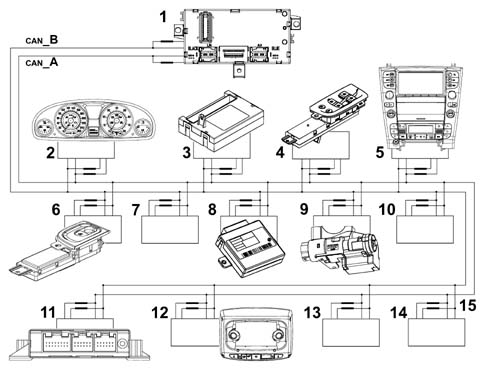
- 1 - Body Computer (NBC)
- 2 - Instrument panel node (NQS)
- 3 - Climate control system node (NCL)
- 4 - Driver door node (NPG)
- 5 - Info-telematic node (NIT)
- 6 - Passenger door node (NPP)
- 7 - Driving position node (NAG)
- 8 - Passive entry node (NPE)
- 9 - Steering lock node (NBS)
- 10 - Passenger position node (NPP)
- 11 - Parking sensor node (NSP)
- 12 - Ceiling node (NIM)
- 13 - Steering wheel node (NVO)
- 14 - Luggage compartment node (NVB)
- 15 - Terminal coils (built-in)
The network interface (transceiver) detects overall and local faults. It avoids data loss via recovery in accordance with the following fault list that may be present in the B-CAN network.
Example:
- Wire or CAN line (B) interrupted
- Wire or CAN line (A) interrupted
- Wire or CAN line (B) short-circited to battery (+)
- Wire or CAN line (B) short-circited to battery (-)
- Wire or CAN line (B) short-circited to earth (-)
- Wire or CAN line (B) short-circited to battery (+)
- Wires or CAN line (A) short-circuitd to wire or CAN line (B)
The network interface cannot communicate at all if both lines (A and B) are interrupted or both lines (A and B) are short-circuited and simultaneously connected to the vehicle earth.
Network termination/polarization
The termination coils do not close the B-CAN line like a loop (A and B) but are connected to the CAN node, i.e. the transceiver of each individual electronic unit.
HIGH SPEED CAN CONNECTION (C-CAN)
Up to 10 nodes may be present on the B-CAN (low speed) network (one for each control unit or electronic unit). All these are connected by means of a pair of wires (BUS CAN) via which a data transmission speed of 500 kbits/sec can be reached.
C-CAN BUS cables are made out of braided or twisted pairs. This device allows a high level of immunity to electromagnetic interference of external origin.
The following electronic units are connected to the Body Computer (NBC) on the C-CAN line (high transmission speed).
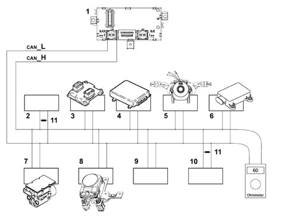
- 1 - Body Computer (NBC)
- 2 - Parking brake node (NPB)
- 3 - Engine control node (NCM)
- 4 - Automatic gearbox node (NCA)
- 5 - Steering angle sensor node (NAS)
- 6 - Lateral yaw sensor node (NYL)
- 7 - Adaptive cruise control node (NAC)
- 8 - Braking system node (NFR)
- 9 - Gear selection lever node electronic unit (NSC)
- 10 - Brake assist node electronic unit (NBA)
- 11 - Termination resistances on parking brake node (NPB) and on braking system control unit (NFR).
The network interface cannot communicate via the C-CAN network if one of the following situations arises:
- interruption of one of the two lines (H and L),
- short circuit between the two lines (H and L),
- short circuit of a line (H) (L) on the battery (+),
- short circuit of a line (H) (L) to earth (-),
Termination/polarization
The termination resistances that close the C- CAN line (H and L) are present only in the parking brake nodes (NPB) and the braking system control unit (NFR).
I-CAN connection
The I-CAN connects the Info Telematic node to the TV Tuner Node to manage TV controls imparted by the user via the NIT.
Serial line
The serial line is effectively an electrical line that consists of a copper cable dedicated to data transfer between the various electronic units (nodes) in consecutive manner. High voltage levels (H) are alternated with low levels (L) continually, i.e. serial.
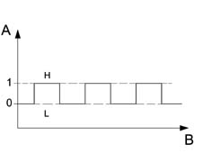
The above figure shows High (H) and Low (L) voltage levels of the serial signal, more specifically:
- High Level (H): corresponding to a value higher than 80% of battery voltage: logic level 1
- Low level (L): corresponding to a value lower than 20% of battery voltage: logic level 0
Example: with battery voltage of 12 V:
- High level (H) = > 9.6 Volt;
- Low level (H) = > 2.4 Volt;
- The transmission speed is generally low (10 kkb/sec). Many data are transferred and the average response time is a few seconds.
Control units connected to K serial line
Control units connected to serial line K are shown below.
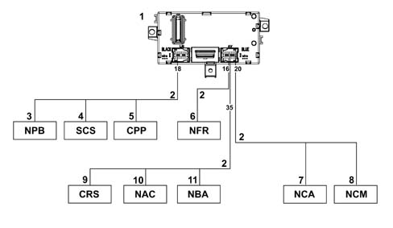
- 1 - Body Computer (NCM) front view
- 2 - Serial line K
- 3 - Parking brake node (NPB)
- 4 - Controlled suspension control unit (SCS)
- 5 - Tyre pressure control unit (CPP)
- 6 - ABS control unit (NFR)
- 7 - Automatic gearbox node (NCA)
- 8 - Engine control node (NCM)
- 9 - Supplementary heater control unit (CRS)
- 10 - Adaptive cruise control node (NAC)
- 11 - Brake servo node (NBA)
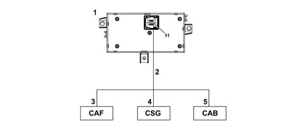
- 1 - Body Computer (NCM) rear view
- 2 - Serial line K
- 3 - Headlamp alignment control unit (CAF)
- 4 - Power steering control unit (CSG)
- 5 - Airbag control unit (CAB)
Control units connected to serial line A-BUS
Control units connected to serial line A-Bus are shown below.
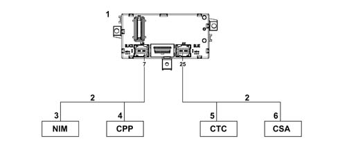
- 1 - Body Computer (NBC)
- 2 - A Bus line
- 3 - Ceiling node (NIM)
- 4 - Tyre pressure control unit (CPP)
- 5 - Windscreen wiper control unit (CTC0
- 6 - Antitheft siren control unit (CSA)
Control units connected to two-way serial lines
Control units connected to bidirectional serial lines are shown below.
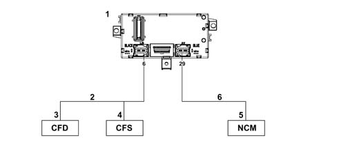
- 1 - Body Computer (NBC)
- 2 - Bidirectional serial line
- 3 - Right light control unit (CFD)
- 4 - Left light control unit (CFS)
- 5 - Engine control node (NCM)
- 6 - recovery w serial line
Recover line W allows an unlocking code to be sent to the NCM node when the C-CAN network between the Body Computer (NBC) and this node is inefficient
DIAGRAM SHOWING BASIC ARCHITECTURE OF THE F.L.ORE.N.C.E. NETWORK AND MAIN NODES
The following diagram shows the main nodes.
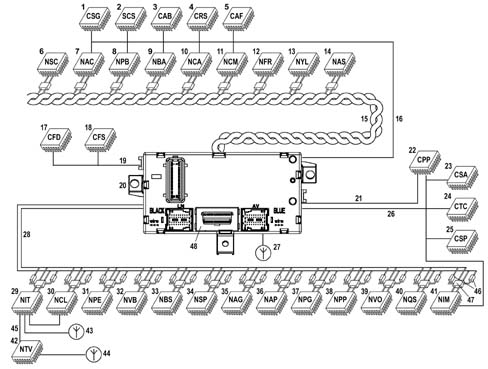
- 46 - Terminal resistances (built-in)
- 47 - Communication interface (transceiver) built into nodo
- 48 - 16 PIN EOBD (eletronic on board diagnostic) tester input
- 1 - Power steering control unit (CSG)
- 2 - Controlled suspension control unit (SCS)
- 3 - Airbag control unit (CAB)
- 4 - Supplementary heater control unit (CRS)
- 5 - Headlamp alignment control unit (CAF)
- 6 - Gear selection lever node (NSC)
- 7 - Adaptive cruise control node (NAC)
- 8 - Parking brake node (NPB)
- 9 - Brake assistant node (NBA)
- 10 - Automatic gearbox node (NCA)
- 11 - Engine control node (NCM)
- 12 - Braking system node (NFR)
- 13 - Lateral yaw sensor node (NYL)
- 14 - Steering angle node (NAS)
- 15 - C - CAN network, high transmission rate, twisted line
- 16 - Serial line K
- 17 - Right light control unit (CFD)
- 18 - Left light control unit (CFS)
- 19 - Bidirectional serial line
- 20 - Body Computer (NBC)
- 21 - K line
- 22 - Tyre pressure control unit (CPP)
- 23 - Antitheft siren control unit (CSA)
- 24 - Windscreen wiper control unit (CTC0
- 25 - Rain/dusk sensor control unit
- 26 - A Bus line
- 27 - Lancia Code aerial
- 28 - B - CAN low transmission speed parallel line (double)
- 29 - Info-telematic node (NIT)
- 30 - Climate control system node (NCL)
- 31 - Passive entry node (NPE)
- 32 - Luggage compartment node (NVB)
- 33 - Steering lock node (NBS)
- 34 - Parking sensor node (NSP)
- 35 - Driving position node (NAG)
- 36 - Passenger position node (NPP)
- 37 - Driver door node (NPG)
- 38 - Passenger door node (NPP)
- 39 - Steering wheel node (NVO)
- 40 - Instrument panel node (NQS)
- 41 - Ceiling node (NIM)
- 42 - TV tuner node
- 43 - GPS- GSM aerial
- 44 - TV aerial
- 45 - I - Can network
E.O.B.D. (ELECTRONIC ON BOARD DIAGNOSTIC) connector
All diagnostic lines converge on the EOBD connector centralised on the Body Computer. The same connector is responsible for connecting nodes (control units) connected to the low transmission speed B-CAN network, while control units, while control units connected to the C-CAN network are tested by means of a specific K line.
Binary
The language of the electronic units is binary - compatible with the electronic circuits (high low) (open closed etc.): to transmit information, data must therefore be handled in accordance with specific codes. Various codes have therefore been developed to meet all requirements.
One of the most common codes is ASCII (American Standard Code for Information Interchange). This alphanumerical code uses coded groups of bits. It is able to represent the 26 letters of the English alphabet plus the ten decimal numbers in addition to punctuation marks and instruction commands. ASCII is an eight bit binary code. Seven bits are used to code information and the eighth is used to check errors. By using seven bits per character, it is posible to code no fewer than 128 information including decimal numbers, upper and lower case letters of the alphabet, punctuation marks etc. Once the numbmer of bits making up a word (i.e. the word length) has been fixed by a data code, this number must not be altered.
A group of eight bits is called a byte and represents 256 values: this number is obtained by testing all possible combinations of (0) and (1) in the eight positions availalbe per byte, for example 00000001, 00001111, 11111111 etc. The numbmer 256 (2 exp. 8) can be used to represent the set of alphabetical characters, punctuation marks, accented or special characters etc. In effect, therefore, a single byte may represent a number, a letter of the alphabet, a punctuation mark or a special character. The byte is used as a unit of measure in saved data quantities and memory device storage capacity.
As with any unit of measure, bytes are also defined as multiple amounts:
- 1 kilobyte (kb) = 1024 bytes = 2 exp. 10 (210)
- 1 megabyte (Mb) = 1024 kb (about one million bytes) = 2 exp. 20 (220)
- 1 gigabyte (Mb) = 1024 kb (about one billion bytes) = 2 exp. 30 (230)
- 1 terabyte (Mb) = 1024 Gb (about one trillion bytes) = 2 exp. 40 (240)
Analogue:
"Linear" electronics is the term applied to analogue effects, i.e. effects that are proportional and continuous.
A water tap is an example of an analogue switch. This is because it can used to shut off the water flow completely, turn the flow to maximum and also obtain all the other intermediate positions that occur on the continuum between the closed state and the fully open state. The Tester mobile coil instrument is also analogue: the pointer may indicate the measurement position from zero to full scale deflection, by moving continuously along the entire graduated scale and passing through all the points on its way.
Digital:
Digital electronic, on the other hand, denotes progress by discrete quantities in quantifiable steps. A light switch is an example of digital operation because the only possible statuses are well-defined and distinct. In this case there are two: on and off, with no intermediate positions. In practice, a digital gauge (whether it operates using warning lights or numbers) increases in steps. It is not possible to determine, for example, the exact level of a fluid between a stage when one warning light on the level gauge is lit and the next is still turned off.
The sensitivity is therefore one step, i.e. the interval between one warning light and the next. The reading is, however, precise and non-subjective.
It is possible to interpose a series of steps between one warning light and the next containing an equal number of warning lights and so on until the discrete measurement steps can practically be equated with the continuous line of an analogue instrument. The similarity is, however, more apparent than real because each step on the digital guage, however small, determines a well-defined position and represents an unequivocable value. Above all, it is not subject to parallalax or interpolation reading errors. To sum up, the sensitivity of a digital instrument is equivalent to that of an analogue instrument but the reading accuracy is always higher.
OPERATION OF MULTIPLEXING NETWORK
The designer of the Florence system allocated control functions to the Body Computer.
The additional Body Computer functions allow it to provide information on:
- network activities status;
- operational failure status of individual electronic units (nodes);
- a possible CAN fault.
The Body Computer Node is given the task of "waking up" the network when the ignition key is turned on.
In the case of a fault in the NBC, the Instrument Panel Node (NQS) is given the task of waking up the network. The NQS cuts in only if it is not woken up by the Body Computer after a certain length of time with the ignition key. This prevents network conflicts
All the the "Node" electronic units process the various signals from associated sensors for individual management purposes and also to manage other control units.
On latest-generation electrical systems, the number of electronic unit that are interconnected, and thus the number of data packages that need to be handled, is very high. For this reason, one or more CAN networks are used in these systems. Compared to conventional wiring, these allow more effective information exchange between the various electronic units.
The physical medium used for the B- CAN (low transmission speed) network is double copper electric wire (not necessarily twisted), whle the wires in the C-CAN (high transmission speed) network must be twisted. In this case, one of the two wires is associated with a high level (H) and the other with a low level (L). The BUS CAN signals are differential, i.e. the value allocated to the bits is represented by the difference between voltage levels of CAN (H) and CAN (L).
To sum up, the combined use of two wires and differential signals allow data packages to be exchanged between different control units on the CAN network. This is even possible in the presence of electromagnetic interference.
Transmission and exchange of data on the respective B- CAN and C- CAN networks and the transfer of data between the lower speed network and the high speed network and vice versa takes place in the Body Computer node (gateway function).
The message issued to a CAN network (multiplexing) by an electronic unit or node is known as a "raster" (data package). It takes the form of a series of pulses, as mentioned previously (known as bits) that take the value (1) or (0). This denotes the presence of absence of a transmitted signal.
CAN node
Each control unit contains a CAN node.
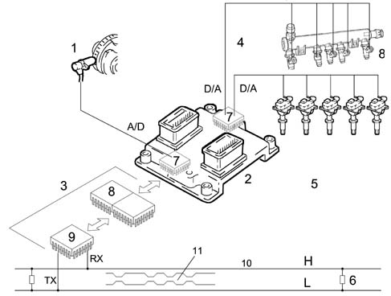
- 8 - CAN controller
- 9 - Transceiver
- 10 - High speed CAN network (H- L)
- 11 - Raster or data package issued to network
- 1 - RPM sensor
- 2 - Engine control node (NCM)
- 3 - CAN node (built into the control unit)
- 4 - Injectors
- 5 - Ignition coils (spark plugs)
- 6 - Terminal resistances
- 7 - Engine control node microprocessor
The transmitted information load is subject to design rules (concerned with sharing of a time window) whereby a medium user load is established for the BUS. This leaves free BUS time margins to ensure operation without jams. One danger is that if an accident occurred, the nodes would sent an enormous amount of high priority data back to the bus in a very short space of time and saturate it. Data of one node on the time line are introduced at different frequencies according to priority.
Numerical coding of an rpm signal on the C-CAN network
The block diagram shows the rpm signal.
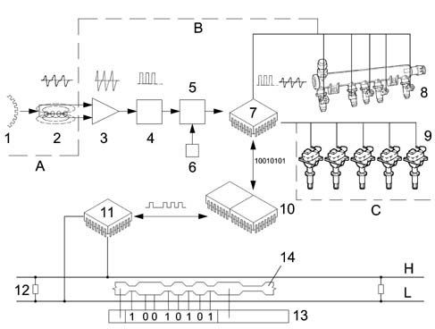
- A - Sensor
- B - Electronic unit (NCM)
- C - Actuators
- 1 - Engine pulley toothed ring gear
- 2 - Engine rpm sensor - analogue signal
- 3 - Analogue signal amplifier
- 4 - Digital signal trigger circuit (58 pulses per revolution)
- 5 - Binary counter
- 6 - Timed circuit (clock)
- 7 - Engine control node microprocessor (NCM)
- 8 - Injectors
- 9 - Ignition coils / spark plugs
- 10 - CAN controller
- 11 - transceiver
- 12 - Terminal resistances
- 13 - Raster or data package issued on C-CAN network
- 14 - Start of second raster
- H-L - High transmission speed BUS CAN lines
The continual passage of teeth (maximum flow) and spaces (minimum flow) on the engine pulley toothed ring gear as it passes in front of the rpm sensor generates variable electromotive force or voltage pulses in the winding. The figure shows the theoretical operating procedure. Before the analogue rpm sensor signals can be used by the electronic unit microprocessor, they must be amplified if they are weak (when ring gear speed is low or tooth number is low) and converted to digital signals by the trigger circuit. The binary counter than numbers them; one pulse for each tooth. To prevent the numbering continuing to infinity, a time signal (clock) produced by a transistorised circuit goverened by a quartz crystal resets the count to zero each second and then begins again. Because the number of ring gear teeth is known, the crankshaft speed of rotation can be calculated. If a ring gear has 240 teeth and turns at 1000 rpm, in one second the following number of teeth will pass in front of the sensor (1000 x 240: 60 = 4000 teeth) corresponding to 4000 pulses. If a binary counter accumulates 4000 pulses (bits) in one second, crankshaft speed is 1000 rpm. If more than 4000 bits are accumulated, the speed will be higher than 1000.
The rpm signal reduced to digital form is one of the many information items used by microprocessor (7) to process data. By using a program stored in the control unit memories, the microprocessor is able to convert the results of its processing into signals that are used as input for the working circuits: ignition point, current intensity and duration in the coils, operation of the injectors or supply of other actuators designed for various functions. Because this signal is destined to be used by other nodes, the engine control unit makes it available on the C-CAN network via its CAN node. In practice, the control unit converts the rpm signal into binary numbers, the only ones that can be analysed by the microprocessor: they are then forwarded to the CAN controller (10), whose task is to prepare a raster (data package) made up of several blocks or fields (contained between a beginning and an end) that contain a series of information to be sent to other nodes.
The task of the final interface, the CAN transceiver (11) is to decode the raster and send it on the BUS network. In practice, it receives from the controller a series of pulses referred to as bits of value one (1) zero (0) that determine voltage levels that are dominant or recessive for the entire time that the node is transmitting. All other nodes that receive the raster correctly confirm reception on the BUS. All receiving nodes also carry out a test to find out whether the raster (message) affects them. Nodes that find the data in the raster to be of significance accept it and process it. Otherwise they ignore it.
High transmission speed C-CAN
The C-CAN HIGH SPEED bus is described below.
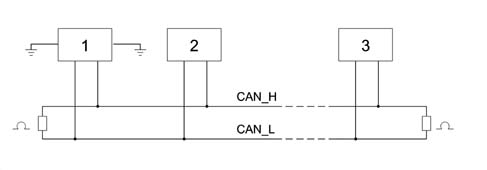
- 1 - Node 1
- 2 - Node 2
- 3 - Node n
The network displays the following characteristics:
- differential voltage signals on both lines (with shared return),
- transmission sped of 500 kbit/sec,
- rated terminal resistances: 120 Ohm ± 1% (200 mW),
- each node is capable of generating a differential voltage of between 1.5 V and 3 V measured on a resistance load of 60 Ohms.
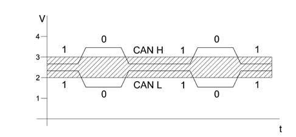
- V - Voltage
- t - Time
A recessive condition occurs on the BUS under the following conditions:
- The CAN H voltage level must exceed the CAN L voltage level by not more than 0.5 V.
- CAN H and CAN L must not fluctuate outside a 2 - 3 V band.
Under these conditions, bit (1) is sent.
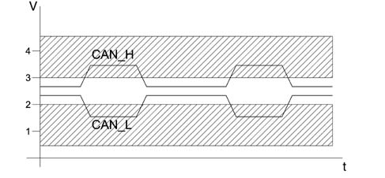
- V - Voltage
- t - Time
A dominant condition occurs on the BUS under the following conditions:
- The CAN H voltage level must exceed the CAN L voltage level by not more than 0.9 V.
- CAN H must not fluctuate outside a band of 2.75 - 4.5 V.
- CAN L must not fluctuate outside a band of 0.5 -2.25 V.
Under these conditions, bit (0) is sent.
Low transmission speed B-CAN
The B-CAN LOW SPEED BUS is as follows.
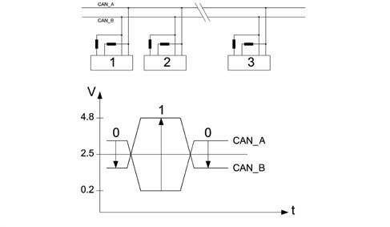
- 1 - CAN node 1
- 2 - CAN node 2
- 3 - CAN node n
- V - Voltage
- t - Time
Calibrated value terminal resistances present on each individual node
Minimal differential voltage in recessive mode CAN_A 0.2V - CAN_B 4.8V = -4.6 V (bit 1)
Minimal differential voltage in dominant mode CAN_A 3.6V - CAN_B 1.4V = +2.2 V (bit 0)
Limitation of interference on CAN network
Representation of network interference.
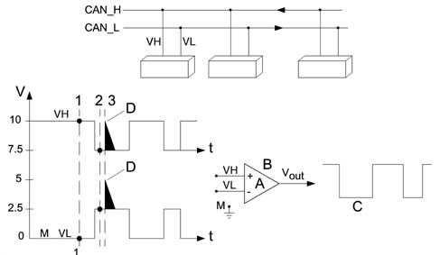
- VH - Voltage signal on channel H
- VH - Voltage signal on channel L
- Vout - Output voltage signal
- A - Amplification coefficient
- B - Operational amplifier
- C - Filtered signal
- D - Noise pulse (interference)
- M - Earth
- Vout = A (VH - VL)
- 1 - VH = 10; VL = 0 Vout = 10-0 = 10V
- 2 - VH = 7.5; VL = 2.5 Vout = 7.5-2.5 = 5V
- 3 - VH = 10; VL = 5 Vout = 10-5 = 5V
- VH-VL = 10V
- Associated value = 1
- VH-VL = 5V
- Associated value = 0
Operational amplifiers are widely used in control units fitted to present-day automotive systems. This plays an important role in amplifying (increasing signal amplitude without altering wave-form) and squaring signals. In this case, it is used as a system that can optimise reactions to transitory interference in the network. The (+) and (-) do not indicate the supply polarity but the two signal inputs. It is possible to use only one signal input or both inputs. If only one input isused, the other is connected to earth. The use of both inputs makes it possible to carry out specific operations such as making a comparison between two signals or working out the sum of or difference between them.
1) VH input voltage in PIN (+) of amplifier operational at instant (1) VH = 10 V
VL input voltage in PIN (-) of amplifier operational at instant (1) VL = 10 V
VH - VL = Vout (10 - 0) = 10 V high output signal
2) VH input voltage in PIN (+) of amplifier operational at instant (2) VH = 7.5 V
VL input voltage in PIN (-) of amplifier operational at instant (2) VL = 2.5 V
VH - VL = Vout (7.5 - 2.5) = 5 V voltage in this case considered 0 low output signal
3) Condition of interference on line (2.5 V)
At instant 3, an interference of +2.5 V intervenes with repercussions on both lines, changing VH = 10 V and VL = 5 V ma
VH - VL = Vout (10 - 5) = 5 V will therefore always be associated with value 0
To conclude, the interference that occurs concomitantly on both CAN network leads will automatically be treated as though it had never existed.
Communication protocol
Circulation or transmission of a message known as a frame or data package on a multiplexing network (B-CAN and C-AN network) is possible only if a transmission protocol is adopted. This the set of rules that allows the exchange of data and controls between two or more electronic units (control units or, better still, nodes).
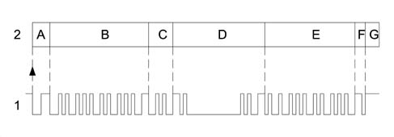
- 1 - Frame
- 2 - Blocks
- A - Identifies the beginning of transmission or start of a new frame (START OF FRAME. SOF) consists of 1 dominant bit and indicates to all other interfaced nodes that they must synchronise with this SOF bit (awake the BUS that may be in stand by).
- B - Iidentifier marks and identifies the message content. Also contains information on message recipients. Arbitrage of transmitted frames is carried out in this field. This means that the indentifier code allows frame content and priority allocated by the network architect to be uniquely identified. (the lower the identification number, the higher the priority)
- C - Control field indicates frame or message structure
- D - Data to be trasmitted (may be orders or information to be transmitted)
- E - Control field; allows a check to be run that the data transmitted are unaltered (message validity). The node or nodes that detect the presence of an error first issue a series of dominant warning bits. The transmitting node eliminates the message and emits a new frame after a certain time lapse.
- F- Reception confirmation. All receiving nodes that use the message and detect the correct sequence from the transmission node (recessive bit) overwrite the recessive bit with a dominant bit. In this way, the transmitting node is assured that the message has been received correctly by at least one recipient. Each node checks the incoming frame. If the frame is relevant to the node, it accepts and processes it. Otherwise it ignores it.
- G - End of frame, message over. The end of frame allows the network (BUS) to switch to IDLE status (unless a node begins a new transmission to the network.
Priority management (Superimposition or collision of non-destructive frame)
The Florence system protocol allows superimposition problems to be handled when several nodes need to emit a frame simultaneously. Each control unit possesses an identification code that also expresses its priority. In practice, when a node (control unit) expresses its intention to transmit a frame on the network (BUS) by means of its initial bit and another node (control unit) simultaneously carries out the same operation, because both read (as well as transmit) the signals emitted by the network, the node that detects a difference between the emitted signal and the received signal detects that another node is emitting a higher priority frame. The node that transmits the lower priority message immediately interrupts its transmission and makes way for the node that is transmitting a higher priority message. In practice, the high priority message is sent to the network without any interruption or delay. Naturally, the control units (nodes) that intended to transmit messages with lower priority must suspend transmission to become receivers and then re-attempt to send the frame when transmission is complete. This non-destructive superimposition is regulated by bit arbitrage. One bit is called the dominant bit and allocated a value of zero (0) while the other bit is known as a recessive bit and its value is equal to one (1).
The higher priority frame gains the right to be transmitted on the BUS. A dominant level (0) always takes precedence over a recessive level (1).
Serial line operating principles
Transmission protocol
Circulation or transmission of data packages on serial lines is possible only if a transmission protocol is adopted. this is a set of rules that allows the exchange of data and commands between various electronic units (control units or nodes).
Each control unit connected to a serial network is identified by a unique address that is inserted in the package to identify the recipient. Data packages are transmitted from a transmitting control unit to a receiving unit, i.e. transmission is one-way. This operation is carried out by sending a question package, which is followed by a response package.
Data package format
The data package format (A) is unique and includes the two following main parts:
- outcome (C): represents confirmation of reception and execution of a command by the control unit to which it is sent
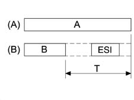
- A - Package
- B - Command
- ESI - Outcome.
- T - Time within which the control unit send the outcome
The outcome is sent within sufficient time to end before T time elapses (value of time T is: T=10±1ms).
Command format
A frame (1) consists of several blocks (2) or fields:
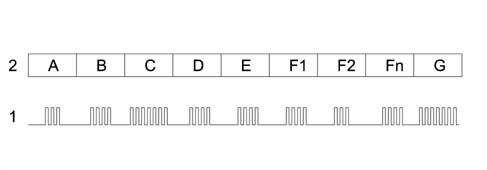
- 1 - Frame
- 2 - Block
- A - 1 byte identifies the start of data transmission
- B - address of the receiving control unit (ECU) is entered
- B - address of the sending control unit (ECU) is entered
- D - identifies the command sent
- E - identifies the command data
- F1- F2...Fn - sequence of all data associated with the command
- G - Checksum (CKS)
Part of the command contains a set of information expressed in bytes, namely:
- Section A (HDR): this is the first byte of package and is used to identify the beginning of the transmission. This is used to wake up and synchronise the other control units and prepare them to begin receiving the data or information package.
- Section B (RECIPIENT) or “recipient indicator”: used to identify the control unit to which the data package is destined. It is possible to identify up to 63 control units connected on the line: each control unit is allocated a different address to ensure that data package transfer is unique. Address allocation is set by the network architect.
- Section C (MITT) sender control unit address: identifies the control unit sending the command.
- Section D (CMD) data to be transmitted: identifies a command sent on a serial line. It is possible to identify up to 255 different commands that may travel on the network. The command list is set by the network architect.
- Section E (NBD) number of command data bytes: identifies the number of bytes in the data relating to the command sent (CMD) on the serial line. Each command can be associated with up to 255 data bytes that make up the parameters. The values that may be assumed by each command are set by the network architect.
- Section F1-F2…FN, identifies the (NBD) sequence associated with the command.
- Section G (CKS) or CHECKSUM is verification of correct data package reception. This is calculated as the sum of all data package bytes (from HDR to FN).
Outcome format
Once the data package has been received, the receiving control unit sends the outcome to the transmitting unit within a very specific time (T=10±1ms) to bring data pckage exchange to a close. The outcome may assume the following configurations:
- ACK command recognised and carried out
- NACK command not recognised
- NAP command not applicable
The outcome consists of a byte organised as follows:
Bit 7 | Bit 6 | Bit 5 | Bit 4 | Bit 3 | Bit 2 | Bit 1 | Bit 0 |
|---|---|---|---|---|---|---|---|
ESI_1 | ESI_0 | ECU | ECU | ECU | ECU | ECU | ECU |
BIT 5, BIT 4, BIT 3 - BIT 2, BIT 1, BIT 0 identify the address of the receiving control unit (ECU).
The value of bit 7 and 6 identifies the true outcome.
ACK (ESI_1=0 ESI_0=0): command is recognised and executed.
The control unit responds ACK if the following conditions are satisfied:
- the command can be executed by the control unit (it is one of its commands)
- the control unit has executed the command.
NACK (ESI_1=0 ESI_0=1): command not recognised.
The control unit responds NACK if it has not received the command sent correctly (CKS incorrect).
NAP (ESI_1=1 ESI_0=0): command not applicable.
The control unit responds NAP if the following conditions are satisfied:
- the command has been correctly received (CKS correct)
- The command can be carried out by the control unit (it is one of its commands) but cannot be executed with the control unit in its current status or the command cannot be executed by the control unit (it is not one of its commands).
The combination ESI_1=1 ESI_0=1 is not allowed for.
The other six bits (from BIT 6 to BIT 0) identify the address of the receiving control unit with reference to the command. In this way, it is possible to address up to 64 control units.
Serial line statuses
During system operation, the serial line assumes two different statuses:
- FREE LINE: identifies rest status or free status of serial line, i.e. absence of transmission on the line The control unit may begin a transmission under these circumstances.
- LINE ENGAGED: identifes situation where a transmission is in progress on the line. Under these circumstances, each control unit (except the transmitting control unit) switches to listening mode and remains in this mode to the end of the data package.
Access to the line
Two or more control units may begin to send information simultaneously. This simultaneous access may give rise to conflict on the line.
Transmission conflict
During transmission, the control units check whether each individual byte making up the data package has been sent correctly on the line. In practice, they compare to see whether what they have sent is the same as what they have simultaneously read on the line. If the result of comparison is negative, a transmission conflict occurs. The transmission conflict immediately interrupts transmission of the data package. Under these circumstances, the control untis immediately stop using the line for a set time period (programmed) to ensure all the other control units detect the interruption of the data package.
Once this time has elapsed, the transmitting control units consider the line to be free again and gain access to it for transmission using the priority mechanism.
Priority access
Each control unit is allocated an access priority code that determines the sequence in which the control units will gain access to the line after detected a conflict. (the priorities are established by the network architect).
In practice: the control unit (node) that is preparing to transmit expresses its intention to the other control units (nodes) by means of an intial bit.
If two control units (nodes) carry out this operation simultaneously, they do not realise immediately. As soon as a transmitting control unit (node) detects a dominant symbol on the BUS, however, it immediately suspends transmission of lower priority messages to make way for the control unit (node) sending the higher priority message. In practice, the high priority message is sent to the network without any interruption or delay.
The control units (nodes) that intended to send lower priority messages naturally stop sending and become receivers. They re-attempt to send their messages when transmission is complete.
Access to the line following conflict obeys the following rules:
- the control unit waits for a certain time (to be programmed) from the movment when conflict takes place and declares the line to be free.
- once free line status has been established, the control unit waits for a further time period (that alters according to the priority code) before gaining access to the line.
Line free status is not a precursor to the beginning of transmission but is the condition that activates priority access and in turn transmission. Transmission is carried out firstly by the control unit with the highest priority code, which takes control of the line to prevent further conflict. The other control units with lower priority codes that gave rise to the conflict thus set themselves to listening mode. Once the data package has been transmitted, they re-attempt access to the line to send the data package that was interrupted previously.
Package transmission
Package transmission begins with an HDR byte (first byte of the command package used to wake up and synchronise the control units) and continues with the command contents: each control unit connected to the network sets itself to listening mode and finds out whether the package is addressed to itself by means of the DEST byte.
Each control unit in stand-by mode that identifies a package not addressed to itself remains in stand-by mode to the end of the package (ESI included) so that the line is not engaged. At the end of command transmission, the receiving control unit processes the command and sends the command outcome.
OUTCOME - YES/ OUTCOME- NO
The outcome is sent within sufficient time to end before T time elapses T=10±1ms). If an outcome is not sent, the package is not properly completed. Therefore:
- the control unit that sent the command: has not received the outcome (has not responded or has received NACK) treats the command sent as not executed and re-attempts to send the command twice. It does not repeat the command if it receives NAP as an outcome.
- the other control units consider the data package to have ended once the time within which the outcome is sent has elapsed (T+10±1ms). From that moment, they can use the line again to send new data packages.
Example of data transmission.
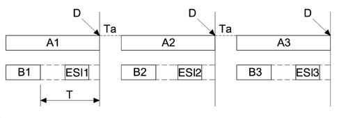
- A - Package format
- B - Command: represents the information sent by a control unit and contains a command and the relevant parameters/data
- ESI - Outcome: represents confirmation of reception and execution of a command by the control unit to which it is sent
- D - Line free
- T - Time (ms) within which the outcome must be sent
- Ta - Time instant as a consequence of which a control unit with higher priority access will take control of the line to prevent new conflict.
Features of A-BUS serial line
STAND-BY MODE
A stand-by mode is included so that several control units (even if not directly involved in command exchange) can use information sent on the A-BUS serial line.
In stand-by mode, the control units read the data and information packages travelling along the line but do not send an outcome (NAP, NACK, ACK) at the end of the package. They may, however, check its validity by means of the package checksum.
A-BUS DEVICES FAULT DIAGNOSIS
Devices interconnected via the A-BUS line are able to carry out self-diagnosis upon the request of any control unit connected to the line. Following self-diagnosis, the devices communicate the result to the requesting control unit by means of a command followed by a certain number of associated bytes that contain the actual outcome.